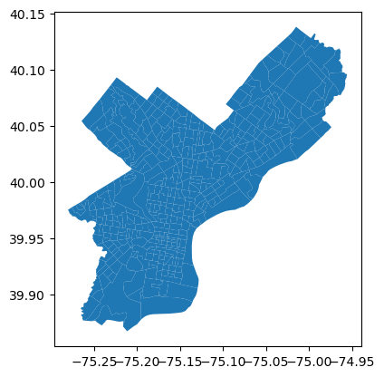

Intel MKL WARNING: Support of Intel(R) Streaming SIMD Extensions 4.2 (Intel(R) SSE4.2) enabled only processors has been deprecated. Intel oneAPI Math Kernel Library 2025.0 will require Intel(R) Advanced Vector Extensions (Intel(R) AVX) instructions.
Intel MKL WARNING: Support of Intel(R) Streaming SIMD Extensions 4.2 (Intel(R) SSE4.2) enabled only processors has been deprecated. Intel oneAPI Math Kernel Library 2025.0 will require Intel(R) Advanced Vector Extensions (Intel(R) AVX) instructions.1.1 Data Collection and Cleaning Process
Queing the Census API and Creating DataFrame
First I’ll que the census API to download the demographic variables needed for this project
- Most Race/Ethnic Categories
- Median Household Income
- Total Population
- Post-secondary completion (Associates & Bachelors)
Next, I turn the requested information into a dataframe, transforming the Census tracts with negative values to 0 so it doesn’t interfere with my mapping and calculations later down the line.
(Note: Median Household Income, Bachelors Degree and Higher, and Associates Degree are measures derived from the entire tract’s population)
Code
import requests
import pandas as pd
api_key = 'e4257eb23558f9d666c87ad6dc303db358377420'
base_url = "https://api.census.gov/data/2020/acs/acs5"
params = {
"get": "B03002_001E,B19013_001E,B03002_014E,B15003_022E,B15003_021E,B15003_023E,B03002_013E",
"for": "tract:*",
"in": "state:42 county:101",
"key": api_key
}
response = requests.get(base_url, params=params)
if response.status_code != 200:
print("Error: Failed to retrieve data")
print(response.text)
else:
print("Request successful")
data = response.json()
columns = data[0]
values = data[1:]
df = pd.DataFrame(values, columns=columns)
df.rename(columns={
'B03002_001E': 'Total Population',
'B19013_001E': 'Median Household Income',
'B03002_014E': 'Black and Latino/Hispanic',
'B15003_022E': "Bachelors Degree or Higher",
'B15003_021E': "Associates Degree",
'B15003_023E': "Masters Degree",
'B03002_013E': 'White and Latino/Hispanic'
}, inplace=True)
df.fillna(0, inplace=True)
df['Median Household Income'] = pd.to_numeric(df['Median Household Income'], errors='coerce')
df.loc[df['Median Household Income'] < 0, 'Median Household Income'] = 0
df.head()Request successful| Total Population | Median Household Income | Black and Latino/Hispanic | Bachelors Degree or Higher | Associates Degree | Masters Degree | White and Latino/Hispanic | state | county | tract | |
|---|---|---|---|---|---|---|---|---|---|---|
| 0 | 4098 | 80470 | 60 | 1083 | 177 | 518 | 475 | 42 | 101 | 002701 |
| 1 | 4300 | 76060 | 0 | 991 | 338 | 427 | 117 | 42 | 101 | 002702 |
| 2 | 4452 | 65847 | 18 | 555 | 404 | 328 | 499 | 42 | 101 | 002801 |
| 3 | 5772 | 67585 | 289 | 1566 | 91 | 698 | 289 | 42 | 101 | 002802 |
| 4 | 3762 | 66932 | 35 | 865 | 80 | 600 | 290 | 42 | 101 | 002900 |
Using Pygris to Download Census Tract Geometries
Now, I utilize pygris to gather the census tract geometries across Philadelphia
Code
import pygris
tracts = pygris.tracts(state = "PA", county = "Philadelphia")
tracts.plot()
tracts.head()
Using the default year of 2021
Using FIPS code '42' for input 'PA'
Using FIPS code '101' for input 'Philadelphia'| STATEFP | COUNTYFP | TRACTCE | GEOID | NAME | NAMELSAD | MTFCC | FUNCSTAT | ALAND | AWATER | INTPTLAT | INTPTLON | geometry | |
|---|---|---|---|---|---|---|---|---|---|---|---|---|---|
| 68 | 42 | 101 | 039100 | 42101039100 | 391 | Census Tract 391 | G5020 | S | 1119799 | 133239 | +39.9332720 | -075.2132103 | POLYGON ((-75.22235 39.93105, -75.22129 39.931... |
| 69 | 42 | 101 | 980902 | 42101980902 | 9809.02 | Census Tract 9809.02 | G5020 | S | 132548 | 50536 | +39.9346276 | -075.2046321 | POLYGON ((-75.20684 39.93409, -75.20655 39.934... |
| 70 | 42 | 101 | 980904 | 42101980904 | 9809.04 | Census Tract 9809.04 | G5020 | S | 1570844 | 158459 | +39.9247300 | -075.2036710 | POLYGON ((-75.21243 39.92523, -75.21130 39.928... |
| 71 | 42 | 101 | 980903 | 42101980903 | 9809.03 | Census Tract 9809.03 | G5020 | S | 171154 | 0 | +39.9347932 | -075.2009884 | POLYGON ((-75.20422 39.93285, -75.20305 39.934... |
| 72 | 42 | 101 | 980906 | 42101980906 | 9809.06 | Census Tract 9809.06 | G5020 | S | 2945390 | 383112 | +39.9095823 | -075.1984052 | POLYGON ((-75.21612 39.90964, -75.21454 39.910... |

Merging Data Sets
Next, I
Merge the census tract geometries with the census demographic dataframe on “TRACTCE”, making sure I merge left on the census dataset that none of my demographic data gets dropped
Ensure that the resulting dataframe is a geodataframe, by calling “gpd.GeodataFrame”
Save the GeoDataFrame into a file “identity_with_tracts” for for usage in parts 1.3 and 2
Code
identity_with_tracts= pd.merge(df,tracts, left_on="tract", right_on="TRACTCE", how='left')
identity_with_tracts=gpd.GeoDataFrame(identity_with_tracts, geometry='geometry')
identity_with_tracts.to_file("identity_with_tracts.geojson")
identity_with_tracts.head()| Total Population | Median Household Income | Black and Latino/Hispanic | Bachelors Degree or Higher | Associates Degree | Masters Degree | White and Latino/Hispanic | state | county | tract | ... | GEOID | NAME | NAMELSAD | MTFCC | FUNCSTAT | ALAND | AWATER | INTPTLAT | INTPTLON | geometry | |
|---|---|---|---|---|---|---|---|---|---|---|---|---|---|---|---|---|---|---|---|---|---|
| 0 | 4098 | 80470 | 60 | 1083 | 177 | 518 | 475 | 42 | 101 | 002701 | ... | 42101002701 | 27.01 | Census Tract 27.01 | G5020 | S | 224842 | 0 | +39.9285526 | -075.1537033 | POLYGON ((-75.15600 39.92553, -75.15592 39.925... |
| 1 | 4300 | 76060 | 0 | 991 | 338 | 427 | 117 | 42 | 101 | 002702 | ... | 42101002702 | 27.02 | Census Tract 27.02 | G5020 | S | 367675 | 0 | +39.9280114 | -075.1495606 | POLYGON ((-75.15285 39.92511, -75.15277 39.925... |
| 2 | 4452 | 65847 | 18 | 555 | 404 | 328 | 499 | 42 | 101 | 002801 | ... | 42101002801 | 28.01 | Census Tract 28.01 | G5020 | S | 222950 | 0 | +39.9289729 | -075.1568319 | POLYGON ((-75.15910 39.92593, -75.15902 39.926... |
| 3 | 5772 | 67585 | 289 | 1566 | 91 | 698 | 289 | 42 | 101 | 002802 | ... | 42101002802 | 28.02 | Census Tract 28.02 | G5020 | S | 362691 | 0 | +39.9288001 | -075.1614073 | POLYGON ((-75.16707 39.92680, -75.16693 39.926... |
| 4 | 3762 | 66932 | 35 | 865 | 80 | 600 | 290 | 42 | 101 | 002900 | ... | 42101002900 | 29 | Census Tract 29 | G5020 | S | 370256 | 0 | +39.9306978 | -075.1655733 | POLYGON ((-75.16949 39.92560, -75.16923 39.926... |
5 rows × 23 columns
Cleaning Data For Choropleth Map
Finally, I
Prepare my date for the first Choropleth Map by creating a melting the data set into a tidy format with my variables of interest for the first part of the analysis (Black and Latino/Hispanic and White and Latino/Hispanic)
Clean the melted dataset to ensure the population column of interest is an int, and free of NAs, or other cluter
Save the melted dataset into a file called “Melted_DF” for usage in part 1.2
Code
race_columns = [
'Black and Latino/Hispanic',
'White and Latino/Hispanic',
]
id_vars = [
'tract', 'Total Population', 'Median Household Income',
'state', 'county', 'geometry'
]
melted_df = pd.melt(
identity_with_tracts,
id_vars=id_vars,
value_vars=race_columns,
var_name='Race/Ethnicity',
value_name='Population'
)
melted_df['Population'] = melted_df['Population'].str.replace(',', '', regex=False).fillna(0).astype(int)
melted_df.to_file("Melted_DF.geojson")
melted_df.head()
| tract | Total Population | Median Household Income | state | county | geometry | Race/Ethnicity | Population | |
|---|---|---|---|---|---|---|---|---|
| 0 | 002701 | 4098 | 80470 | 42 | 101 | POLYGON ((-75.15600 39.92553, -75.15592 39.925... | Black and Latino/Hispanic | 60 |
| 1 | 002702 | 4300 | 76060 | 42 | 101 | POLYGON ((-75.15285 39.92511, -75.15277 39.925... | Black and Latino/Hispanic | 0 |
| 2 | 002801 | 4452 | 65847 | 42 | 101 | POLYGON ((-75.15910 39.92593, -75.15902 39.926... | Black and Latino/Hispanic | 18 |
| 3 | 002802 | 5772 | 67585 | 42 | 101 | POLYGON ((-75.16707 39.92680, -75.16693 39.926... | Black and Latino/Hispanic | 289 |
| 4 | 002900 | 3762 | 66932 | 42 | 101 | POLYGON ((-75.16949 39.92560, -75.16923 39.926... | Black and Latino/Hispanic | 35 |